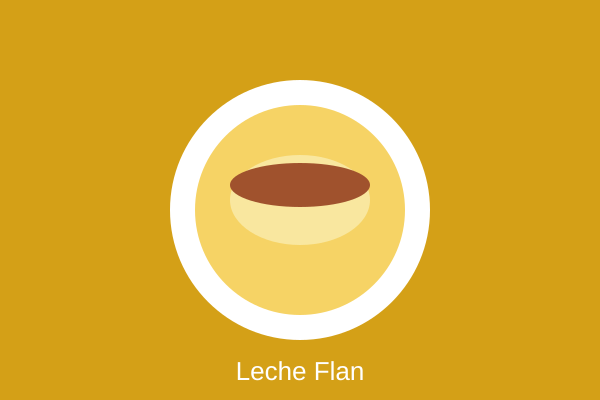

Leche Flan

Description
Leche flan is a rich and creamy Filipino caramel custard. It is made with egg
yolks and milk, steamed slowly in a llanera (oval mold) coated with caramelized
sugar. It is a must-have dessert at birthdays, fiestas and Christmas.
Ingredients
- 10 egg yolks
- 1 can (390 g) condensed milk
- 1 can (370 ml) evaporated milk
- 1 tsp vanilla extract
- 1 cup white sugar (for the caramel)
Steps
- Melt the sugar in the llanera over low heat until it turns into amber caramel. Let it cool.
- Gently mix the egg yolks, condensed milk, evaporated milk and vanilla. Avoid making bubbles.
- Strain the mixture twice for a smooth texture.
- Pour the mixture over the caramel and cover the mold with foil.
- Steam over low heat for 35–40 minutes, until a toothpick comes out clean.
- Let it cool, then chill in the refrigerator for at least 2 hours.
- Run a knife around the edges and flip onto a plate to serve.
Back to all recipes